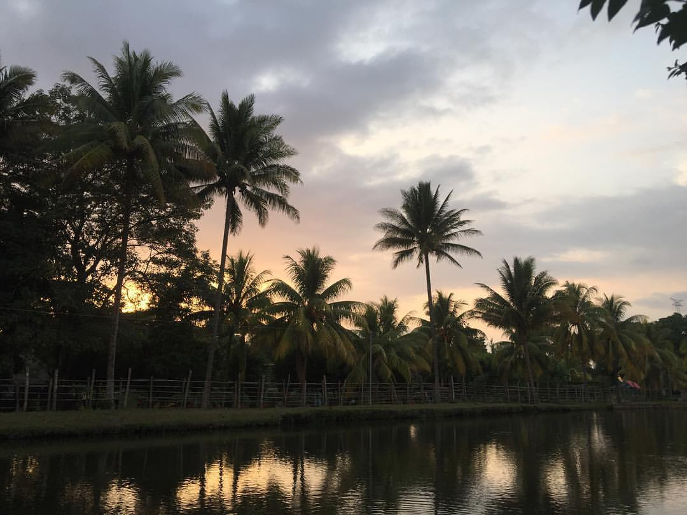
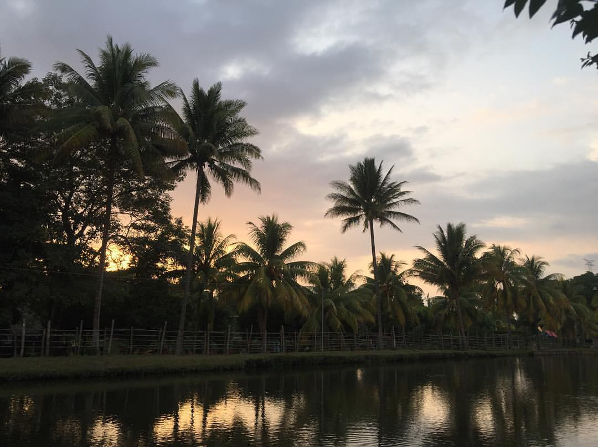

¿Que es este lugar?
Esta antiquísima población fue fundada y habitada desde tiempos inmemoriales, como Ahuachapán y Chalchuapa, por indios pok'omames, del grupo mayaquiché. Sin embargo, conquistados sus pobladores por guerreros yaquis o pipiles hacia fines del siglo XV, éstos le cambiaron el nombre original y le dieron el náhuat que aún conserva. En efecto: en idioma náhuat, Atiquizaya está constituido de las raíces: at, agua; y quizaya, quizayan, origen, lugar de donde sale alguna cosa. Ahora bien: el segundo vocablo hace en composición iquizaya o iquizayan, palabra que se traduce por "su origen, su comienzo". Esta última palabra forma, con la voz at como prefijo, el toponímico Atiquizaya o Atiquizayan, que significa "hilos o filetes de agua, arroyos, riachuelos". En consecuencia, en una traducción afortunada y amplia el nombre Atiquizaya puede traducirse por "lugar abundante en aguas" o "lugar de manantiales"
La ciudad de Atiquzaya es parte de pueblos vivos de El Salvador deivido a sus bellas costumbres y tradiciones ademas de sus hermosos paises o sitios turisticos entre los cuales se encuentra el salto de Malacatiupan un lugar muy visitado por sus cristalizas aguas y la union de aguas termales y frias.Entre algunas de las costumbres y tradiciones se encoentra el festival de la quesadilla uno edlos mas emblematicos de dicho lugar pues este alimento es originario de Atiquizaya , por el cual se realiza su dicho festival es cuales fuertemente apoyado por personas locales como turistas y el resivimiento de los lugareños es en un ambien calido lo cual nos lleva Atiquizaya es un hermoso lleno de vida, paisajes, culturas y tradiciones.
Nuestras Atracciones
 



.jpg)

.jpg)
Turisticos
Fiestas patronales
Los Atiquizayenses, en Ahuachapán, comienzan a disfrutar sus festejos patronales, que se celebran en honor a la Inmaculada Concepción de María, a partir del 8 de noviembre, cuando el Comité de Festejos realice frente a la alcaldía, la presentación de las 10 candidatas que aspiran a convertirse en la reina de las festividades.
Dia de los Farolitos
El día jueves 8 de septiembre el municipio de Atiquizaya llevó a cabo la celebración de los famosos farolitos, los pobladores del lugar participaron de la actividad decorando sus casas
Festival de la Quesadilla
Veinte artesanos que elaboran quesadilla, principalmente en hornos de barro, participarán en el festival de dicho producto, que es característico del municipio de Atiquizaya, en Ahuachapán.La actividad se enmarca en la celebración del natalicio de San Juan Bautista, que es cada 24 de junio.
Salto de Malacatiupan
Cascadas termales con propiedades medicinales, un cangrejo de oro y una historia de amor que terminó en desgracia, son los atractivos turísticos que ofrece la “ciudad de los manantiales” en el occidente del país.Tres cascadas de aguas termales que caen desde más de 12 metros de alto y una poza de color turquesa, esperan a los intrépidos que buscan de aventuras en Atiquizaya, Ahuachapán